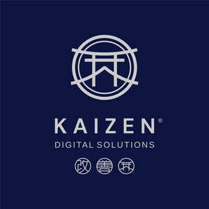
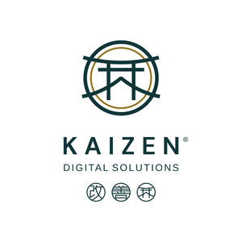

Trade Mark Journal No.2025/016 18 April 2025
UK00004178623 24 March 2025 (9,35,42)
Mark 1

Mark 2

- Class 9
- Mobile apps; Motion pictures; Media content; Cash registers; Data processing equipment; Computers and computer hardware; Computer software; Downloadable electronic publications; Software downloadable from the internet; Apparatus for the reproduction of data; Instruments for the transmission of images; Apparatus and instruments for reproducing of sound; Image transmission apparatus; Apparatus and instruments for reproducing of data; Apparatus and instruments for transmitting data; Audiovisual recordings; Cinematographic films; Downloadable image files; Recorded content.
- Class 35
- Advertising; Advertising and marketing; Advertising, promotional and marketing services; Advertising services provided via the internet; Business management; Business management consultancy; Business administration; Data processing; Electronic data processing; Digital marketing; Marketing agency services; Providing marketing consulting in the field of social media; Advertising and marketing services provided by means of social media; Online marketing; Search engine optimisation services; Writing of publicity texts; Brand strategy services; Preparation of advertising campaigns; Brand creation services (advertising and promotion); Product marketing; Marketing research and analysis; Production of advertising material; Creating advertising material; Business consultancy services; Management consultancy services; Production of video recordings for publicity purposes; Production of sound recordings for marketing purposes; Advertising for motion picture films; Production of television commercials; Cinematographic film advertising; Film directing of advertising films; Distribution of printed promotional material by post.
- Class 42
- Electronic data storage; Logo design services; Graphic design; Website design; Graphic illustration design; Brand design services; Design of audio-visual creative works; Hosting of digital content; Technological services and design relating thereto; Technological services and research relating thereto; Animation design for others; Design and development of computer hardware and software; Computer programming; Design and graphic arts design for the creation of web pages on the Internet; Design, creation and programming of web pages; Design of artwork; Creating, maintaining and hosting the websites of others; Computer and software consultancy services; Design services; IT services; Animation and special-effects design for others; Design consultancy; Design of software; Product design; Design of typefaces.
KAIZEN DIGITAL SOLUTIONS LTD